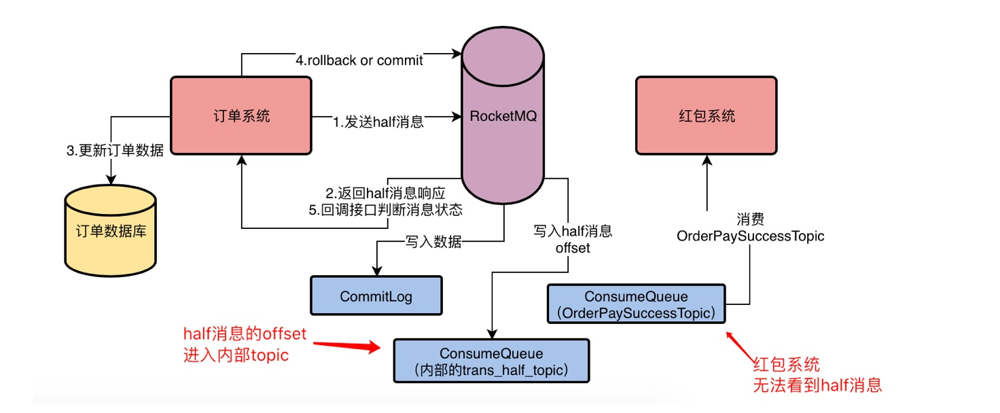
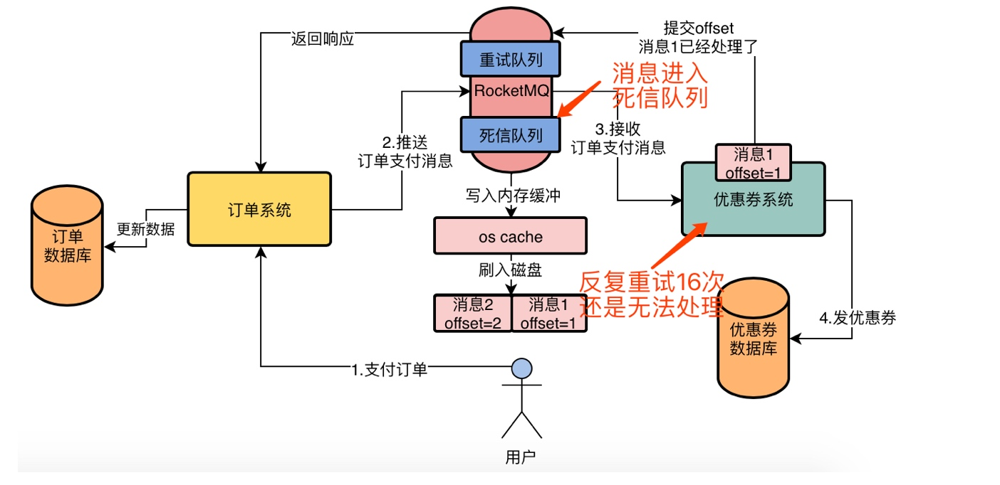

0消息丢失方案
发送 half 消息到 MQ 去，试探一下 MQ 是否正常
Half 消息成功之后，订单系统完成自己的任务
示意图


实现原理

- 那么在什么情况下订单系统会收到 half 消息成功的响应呢？
- 必须要 half 消息进入到 RocketMQ 内部的 RMQ_SYS_ TRANS_HALF_ TOPIC 的 ConsumeQueue 文件了，此时就会认为 half 消息写入成功了，然后就会返回响应给订单系统
没有rollback和commit
后台有定时任务，定时任务会去扫描 RMQ_SYS_ TRANS_HALF_ TOPIC 中的 Half 消息，如果你超过一定时间还是 half 消息，他会回调订单系统的接口，让你判断这个 half 消息是要 rollback 还是 commit
如果执行 rollback 操作的话，如何标记消息回滚？

- RocketMQ 内部有一个 OP_ TOPIC，此时可以写一条 rollback OP 记录到这个 Topic！里，标记某个 half 消息是 rollback 了
commit后如何让消息可见

消费者红包0丢失方案
- RocketMQ 的消费者中会注册一个监听器，就是上面小块代码中的 MessageListenerConcurrently：这个东西，当你的消费者获取到一批消息之后，就会回调你的这个监听器函数，让你来处理这一批消息。
- 然后当你处理完毕之后，你才会返 ConsumeConcurrentlyStatus. CONSUME_ SUCCESS 作为消费成功的示意，告诉 RocketMQ，这批消息我已经处理完毕了。

防止消息重复的幂等操作

重试

- RESUME——LATER